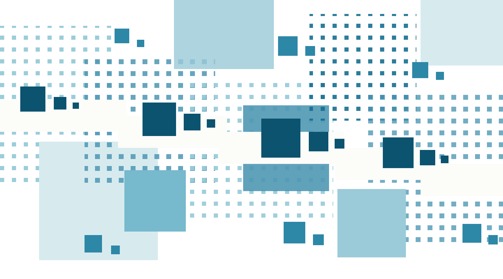

Purify Search
Search is how intelligence
meets the world.
Purify Search is building a path from the open, changing web to context AI systems can inspect, update, and use.
Before it becomes data,
it is the world in motion.
Every discovery begins with seeing. Every leap forward begins with understanding.
The web is humanity’s
living memory.
Our questions, discoveries, mistakes and ideas—still changing, still connected.
The next intelligence should inherit more than information. It should inherit the context that gives it meaning.
BLUE FIELD / FRAGMENT · OVERLAP · RECONNECT


Facts become useful through careful observation, comparison, and the responsibility to keep uncertainty visible.
From the changing web
to evidence AI can inspect.
One continuous practice: find what changed, preserve what conflicts, and keep every repair inspectable.

An evidence record keeps disagreement visible.
What changed in the public dataset?
Two sources disagree on the release date. Both claims remain attached to their sources; neither is promoted automatically.
Build the future on a clearer
understanding of the world.
We are building the connection between humanity’s changing knowledge and the intelligent systems that will work alongside us.
For researchers discovering faster.
For builders solving harder problems.
For intelligent systems working alongside people.
For every intelligence working on humanity’s next chapter.